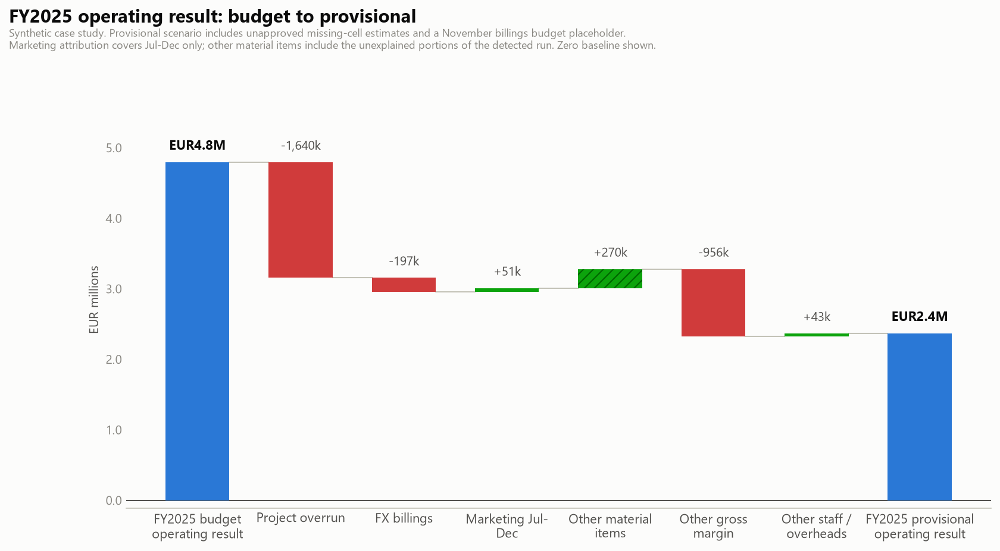

Synthetic case study. As of 30 June 2026. Provisional; pending human review.

FY2025 provisional group operating result is EUR2,367k. The budget comparator is EUR4,795k and includes estimates for missing budget cells. The shortfall is EUR2,429k, an adverse variance. Brand Events records a provisional FY2025 operating loss of EUR391k.
These results use unapproved estimates for missing source cells and a budget placeholder for November 2025 Brand Events billings. The source amount remains unconfirmed. Totals are a provisional demonstration scenario, pending source verification.
Brand Events: EUR1,640k adverse P&L impact from the project cost overrun during Apr-Jun 2025.
Digital/Influence: EUR197k adverse P&L impact from the FX billings shortfall during Sep 2025.
Corporate Events: EUR51k favorable P&L impact from the marketing underspend in the documented period during Jul-Dec 2025.
Gross-margin variances below monthly materiality total EUR956k adverse in FY2025 and need review alongside the largest project item.
The Corporate Events marketing run spans April 2025-February 2026. In-housing is documented from July through December 2025. The earlier and later months need separate explanation; the detector cannot establish that the saving has ended.
Digital/Influence Net billings, 2025-08: EUR135k favorable, still unexplained. The BU controller owns the follow-up.
Government & Institutions Cost of sales, 2025-09: EUR69k adverse, still unexplained. The BU controller owns the follow-up.
2 material items remain unresolved in the full historical review. Analyst explanations elsewhere are illustrative manual input on synthetic data.
Group Q3 2026 net billings forecast: EUR23,000k. Group Q3 2026 operating profit forecast: EUR663k.
Brand Events Q3 2026 net billings forecast: EUR10,682k. Brand Events Q3 2026 operating profit forecast: EUR812k.
Corporate Events Q3 2026 net billings forecast: EUR4,408k. Corporate Events Q3 2026 operating loss forecast: EUR143k.
Digital/Influence Q3 2026 net billings forecast: EUR5,563k. Digital/Influence Q3 2026 operating loss forecast: EUR2k.
Government & Institutions Q3 2026 net billings forecast: EUR2,348k. Government & Institutions Q3 2026 operating loss forecast: EUR4k.
Group July 2026 operating profit forecast: EUR423k. Group August 2026 operating loss forecast: EUR193k. Group September 2026 operating profit forecast: EUR433k.
The selected forecast retains unresolved historical effects. The August operating loss needs review by BU managers and group FP&A. A seasonal pattern does not establish that the loss is commercially acceptable; compare the raw baseline and unapproved sensitivity in the forecast report.
Brand Events' manager should review project recovery and margin controls with group FP&A. The Corporate Events manager should review the forecast loss and document the savings period. BU controllers should resolve the two unexplained items; the finance data owner should confirm missing cells and November billings before approval.